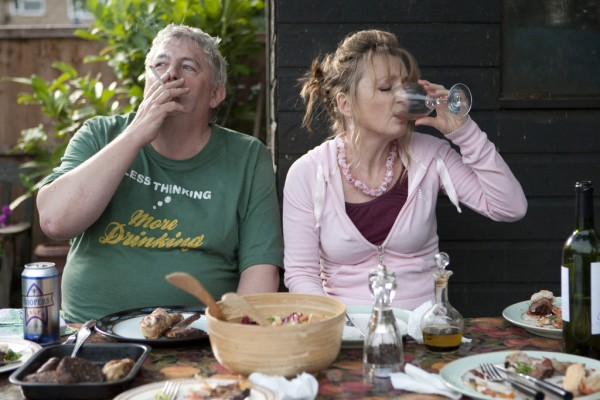
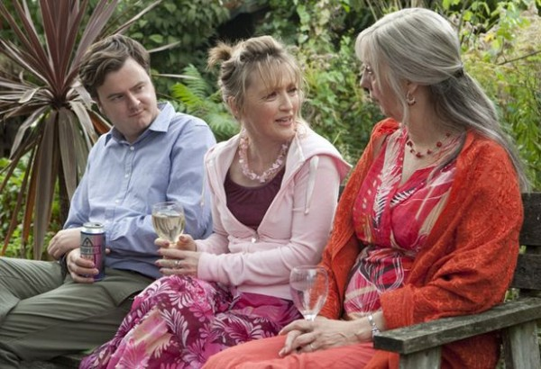

-
The Lives We Live: Mike Leigh’s “Another Year”
by Debora Kuan January 27, 2011
Ruth Sheen, who plays one-half of the well-loved older couple that is the focus of Mike Leigh’s latest film Another Year, is not beautiful. The unkind adjective for women like her—and by this, I mean, not unkindly, those who have aged naturally, allowing their skin and flesh to follow their intended gravitational course–may be “matronly.” Were she to be an actor in the U.S., and not England, I’d say the chances of her gracing the silver screen in a major role would be approximately zero.
But grace the screen she does, in all the best meanings of the word, in this deceptively simple portrait of middle-class life from the award-winning director of Happy-Go-Lucky, Vera Drake, and Secrets and Lies. With his new film, Leigh revisits the same temperamental dichotomy explored in Happy-Go-Lucky, deploying a similar strategy to achieve his particular brand of realism: pitting the well-adjusted against the miserable in a series of increasingly uncomfortable conversations. Like its predecessor, Another Year is a film that is driven by talk, and banal talk at that, but, as we have come to expect from Leigh’s work, it manages to rise far above what, in a lesser filmmaker’s hands, would be the severe limitations of rapid-fire platitudes (perhaps a byproduct of the improvisational method) and everyday circumstances.
As the title indicates, Another Year observes a year, demarcated by the four seasons, in the lives of North Londoners Gerri (Sheen), her husband Tom (Jim Broadbent), and their friends and family. Gerri, a counselor in a medical clinic, and Tom, a geological engineer, are that rare but pleasantly reassuring anomaly in cinema: a happily married couple. They live in a cozily decorated, quasi-bohemian home and are nearing retirement. They garden in all weather, cook, and enjoy their jobs. They also have a grown son, Joe (Oliver Maltman), who, perhaps following in his mother’s footsteps, works in a social service capacity, as a community lawyer.
It is the couple’s friends—particularly, Mary, a secretary at Gerri’s clinic, and Ken, Tom’s childhood friend—for whom happiness is more elusive. Of the two, Mary, a self-conscious, middle-aged Miss Lonelyhearts, played by Lesley Manville, fondly orbits Gerri and Tom, coming over to their home often for dinners and barbeques, in the hope not only of enjoying their company but also of flirting with their son, almost twenty years her junior. She calls herself a “glass-half-full” person and says that she likes her life, but the fidgety, uncertain manner in which she rambles on about her car and man troubles suggests a deeper unhappiness to which she cannot yet admit.
The other friend Ken (Peter Wight)—bulky, neckless, and proud to sport a T-shirt that says, “Less thinking, more drinking”—does not live in London, so visits the couple less often, but when he does, is no less forthcoming with his lubricated expressions of personal woe. The first time we see him, he breaks into sobs after fifteen minutes of catching up with Gerri and Tom.
Is it class that doles out this disparity in happiness? Certainly, the stubborn resistance of the woman we first meet at Gerri’s clinic when the film begins—a stern, middle-aged, working-class woman (Imelda Staunton of Vera Drake) who complains of insomnia—feels familiar to us. Staunton’s character simply wants sleeping pills; she resents that her doctor and then Gerri imply a deeper, more psychological reason for her sleeplessness and try to help her by engaging her in talk therapy. When Gerri asks her to think of her happiest memory, she replies that she doesn’t know. Gerri pauses, rephrases the question, and asks her to take her time. Still the woman refuses to answer. When asked what would make her life better, the woman responds, “A different life.” Leigh directs this scene unflinchingly. Gerri is a paragon of respectfulness, grace, compassion. She carries herself with a stillness that should be the attribute of every good therapist, counselor, or psychiatrist. But the woman across her desk is no less empathetic in her stonewalling. We can understand her reluctance to share. Why should she air her dirty laundry? What could possibly be changed in a life of hardship and disappointment by telling a stranger how she feels? And who is this woman, this counselor, who lives a comfortable bourgeois life of contentment, to understand or help or make recommendations for improvement?
Unfortunately, we never see Staunton’s character again in the film. But we do, in a bleak English winter, quite appropriately, meet her male equivalent: Ronnie (David Bradley), Tom’s brother, who has just lost his wife Linda. Hull, where Tom and Ronnie grew up and where Ronnie still lives, is so grim, lifeless, and economically deprived that this segment of the story almost appears to be a different movie. The palette turns blue-gray, and Ronnie, gaunt and forbidding with the facial features of a hawk, looks about as mean as life has likely been to him. Ronnie’s life is the road Tom’s didn’t take, and his family—like Tom’s, with an only child, a trio—is as loveless and estranged as Tom’s is fulfilled, a fact made painfully evident by Linda’s sparsely attended funeral and the exchange of caustic words between father and grown son Carl, who arrives late and lashes out at everyone.
That Tom came from this milieu is significant, suggesting that social mobility in Britain is still possible. But what made it available to Tom and not to Ronnie? Inner talents, more self-determination, better social skills, luck? Leigh doesn’t provide us with enough exploration of the brothers’ pasts to come to any satisfactory answers, but if Ronnie’s impenetrable catatonia is any clue—it cannot all be shock and grief, Tom was always the brighter bulb of the two.
When Tom invites Ronnie to stay with him in London for a few days after the funeral, we feel almost physical relief that Ronnie will be removed, at least for a little while, from his sarcophagus of a council flat. But once there, Ronnie, like an errant bleach, subdues the formerly vivid colors of the couple’s home, and the dour hues of Hull return. By no ill will of his own, Ronnie changes the home from a place of warmth and welcome to one of caution and stinginess. We see this during an extended scene when Mary comes to the house looking for Gerri and Tom while they are out and Ronnie holds the front door open just the requisite amount of inches, trying to assess whether or not to let her in.
Of all the troubled people in Another Year, though, it is Mary who receives the most attention; indeed, the film ends with a lingering close-up of her face at the kitchen table, as if to distinguish her from the others with a final question mark. Mary, unlike Ronnie and the insomnia patient, is not hopeless. She is not past feeling, and therefore, not past the point of change, in part because the main derailments in her life were a result of poor choices (for example, an affair with a married man), not a deck that was already stacked against her. In fact, it is vanity that keeps her from having a meaningful romantic relationship (she rebuffs Ken for Joe), and it is pride that motivates her to reject out of hand Gerri’s suggestion that she seek professional help from a therapist. At the end of the film, when she breaks down, her pathos is real. We have all been Mary in that moment, full of remorse, bereft of purpose. And we have all looked to those people in our lives whom loneliness and desperation never seem to touch and wondered, How? How did you do it, and why can’t I?
As upright and together as she is though, Gerri (and for that matter, Tom) is not annoying to watch (unlike Poppy of Happy-Go-Lucky whose ebullience tends to chafe). Nor does she smack of two-dimensionality or disingenuousness. She seems to have come by her good life and her goodness by acquisition of genuine wisdom and experience. For all intents and purposes, she is someone whom one ought to strive to be.
We do not often see characters like hers and Tom’s, perhaps because portraying virtue on screen is prone to flatness and thanklessness. Typically, if it is to be portrayed in film, it must be writ large and tragic-heroic, embodied by a likely or unlikely character who must struggle against an unjust society or circumstance (recently, Never Let Me Go, and less recently, the oeuvre of Lars von Trier). If that goodness doesn’t triumph, it is usually snuffed out, slowly and excruciatingly (The Bicycle Thief, Dancer in the Dark) or corrupted absolutely (Michael of The Godfather, Rosemary of Rosemary’s Baby). There is no such nihilism here. Instead Leigh’s minimalist realism seeks to capture only the most basic manifestations and contours of a good life. His scope is modest and his characters Rohmer-esque in their commonness, but the questions the film raises are absorbing, necessary, and instructive: How should a person be? How should one live this life? The answers, Leigh suggests, at least for some of us, may not have to be as difficult as we make them.